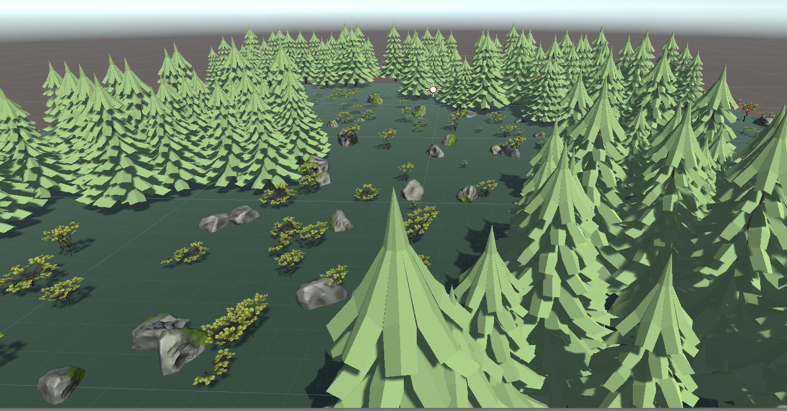

Project Log
Table of Contents
Introduction
This page will consist of the collaborative log from each group member and eventual problems and challenges that the group encounters during the development process of the project.
Usually, the group will write their own individual efforts at the end of the week and everything will be then compose into one shared log which will be written here.
Week 12
This section is a work in progress
As usual, this week had the regular meetings with the group and the supervisor, where we asked a few questions that we had, such as how obligatory attendance works now during home-studies because of the Coronavirus.
Decisions
- Group summaries are now written directly into the project log document, rather than in the Google Sheet first.
Writing
Jacob has continued his report writing and spent almost the entire week writing on the final report. Some chapters have gotten a good start already, such as the theory, introduction and the background chapter. So far, 12 pages has been written. Our goal is that everyone gets started writing on the final report next week.
Development
At this point, most of our generators were implemented into the full pipeline resulting in a pretty good looking city. We spent a lot of time tuning parameters to improve the overall look of the city and analysed the results to find bugs and inconsistencies.
City generation
The block, plot and building generation now makes use of a population density map which previously were only used for highways to “guide” the roads into other cities or high-density areas.
Amplifiers were also introduced to the population map, which basically lets us modify the noise output. For example, when cities are placed, the population map will get a circular amplifier in the middle of the city, which will increase the population density closer to the center of the city.
City generation starting points and size were previously hard-coded into the code, but now there is a feature to select points in the world while generating. This means we can now control where cities are generated which means we can place them in positions that might not be suitable for cities, to see what it results in.
Roads now have dedicated sidewalks and they are also correctly projected onto the terrain rather than clipping through it.
Buildings
Theodor has come a long way with new building generator which aims to replace the white blocks we got in our old generator. By using an L-system for generating the walls, we can get an incredible amount of flexibility in the aesthetics of the buildings. We can set up rules depending on the floor, the size, basically anything to generate different walls. Currently, there are only some different types of wall segments but this can be extended whenever.

Figure 1: Theodor’s building generator
Export
Something that Jacob got working several weeks ago was finally put to the test, the export function. We generated a complete city and exported it and the results were quite nice. Textures are working fine and we now know for sure that the export functionality will work fine with the whole city generated.

Figure 2: Exported mesh rendered in Blender
GUI changes
The GUI got a few updates to improve user experience. Now, the user cannot proceed to the next state before the current state has generated something, and the GUI is also disabled while the generator is running, if the generator is an asynchronous one.
Problems and solutions
City placement
One problem that was discovered was that placing cities in water would create isolated road nodes that had no connections, this was quickly fixed by letting agents who start in water wander for a few steps before terminating, and if they encounter land they start their “real” road generation.
Also, isolated cities did not get their mesh created because the mesh generator initiates from a single node and traverses through the network, which means some networks that are isolated would not be reached.
Performance
We quickly noticed performance issues when the city had been fully generated. In an attempt to fix this, some of us were profiling and analysing our code to see potential performance hickups.
We found that some of our code intended for debugging still did work even though we had turned off debugging. Most generators has for loops to visualize what it generates, in the form of lines. To draw these lines, we used for loops with a debug check, but the check was performed inside the loop rather than encapsulating the entire loop. Simply moving the debug check to the for loop gave us significant performance boosts.
However, there are still lots of performance issues when the city is finished generating, and this is due to the amount of triangles rendered in the scene. But we have seen Unity projects render far more than what we have, with much better performance, so we need to dig deeper into the engine and find out what optimizations exists that we are not making use of. One thought that comes to mind is the fact that our content is dynamic, and thus, occlusion culling would not work since that requires the developer to pre-bake occlusion data.
Alexander spent some time researching these optimizations and found that one solution might be to merge meshes together. Having one mesh for all buildings and roads, or at least separated into chunks, might give a significant boost, but no actual implementation and testing has been done as of yet.
Week 11
This section is a work in progress
During the meeting with the supervisor, we asked regarding our current project log, which was just a Google Sheet which included our own individual efforts as well as a summary of the progress of the week. We heard from another group that they had a very dedicated project log that they received praise from the examinator for, which is why we wanted to ask if we should do the same. We shared the other group’s project log with our supervisor and he said it was much better than what we had, so we decided to do something similar.
This is the project log that we decided to write, and all weeks prior to this is simply rewritten from our short summary of that week, a combination of our individual efforts, as well as from memory.
Decisions
- A more dedicated project log for the progress of each week should be written. Alexander is assigned to doing this task.
Writing
Jacob has spent some time this wek for the report, notably the theory chapter which now has descriptions of Noise, L-systems, Search-based PCG and Voronoi diagrams.
Development
Buildings
Building and block generation has gotten a lot of improvements. Alexander implemented block and plot type classification based on the size of the block / plot, which lets us give the blocks / plots more variety in the city. Jacob added a skyscraper generator which is generated inside skyscraper plots which are randomly assigned from the plot generator.
Theodor has started creating what will be the final structure of the BuildingGenerator, which includes the ability to generate any type of building with different kinds of strategies and will give the city much more variety when it comes to buildings.
Most generators have receive the updates to allow them to project their results onto the terrain now, such as the ParkGenerator which will project the paths in the park up to the terrain, similar to what the roads do.
GUI
Marcus has finished the terrain options: terrain offset and sea level sliders. The sea level of the world can be adjusted with the sliders and the user can also navigate along the terrain by adjusting the terrain offset speed slider.
Alexander worked with improving generation in the UI, like separating the road and street generation so that the user can re-generate the roads if the results does not satisfy their needs.
Road and park path mesh
Anton has also been making improvements on the generated road network mesh. This includes resolving bugs for specific intersections cases that caused the intersections and roads to stretch and occupy the whole world. Furthermore, the same problem was solved for a bug where duplicate identical roads were being instantiated. The roads also try to project onto the terrain, which is still a work in progress as some segements of the roads appear underneath the terrain which needs to be resolved next week.
In addition to that, Viktor and Anton adapted and generalized the road mesh to be used for parks as well since the previous method of creating roads were dependent on the Unity editor, for the built-in terrain.
Week 10
This section has not been rewritten yet!
In this week, Marcus has worked on the UI for the terrain generator, adding sea level, x offset and z offset as modifiable options. A lot of PRs were reviewed/merged such as Mesh Terrain, Noise module, plots and buildings. We aso started on the final report and wrote about noise in the Theory chapter. Viktor spent this week adding the Park Generator to the World Generator and doing a little bit of report writing. We started doing daily meetings online. Alexander worked on the road generation so that it now adjusts based on terrain slopes and sea level in such a way that it doesn’t enter seas or tries to ascend to steep hills. This week Anton spent on reworking the generated road meshes (simplifying by removing crosssection, only road width and sidewalk now) and tweaking the intersections to a way that more similarily resembled CityEngine’s intersections(WIP).
Week 9
This section has not been rewritten yet!
<Exam week>
Week 8
This section has not been rewritten yet!
This week Anton worked on creating intersections between roads. At the moment the outline of the intersection looks reasonable - however, no actual complete mesh is generated except for the arc “”corners“” between two roads entering the intersection. Alexander has worked on a general noise generator component that can be used in many parts of the application, and also implemented the noise in the road generation to create highways outside cities that are guided towards high populated areas. Jacob worked on FBX -> glTF for terrain since FBX didn’t work without depending on UnityEditor. Since Unity’s terrain is dynamic it doesn’t work well in exporting as model, you can convert it to a mesh but that also requires UnityEditor. Thus, Jacob worked a lot on converting this terrain into a mesh-based one, integrating it with noise module, and supporting multiple textures and such. Marcus has been working slightly on camera movement so that the user can look around the city.
Week 7
This section has not been rewritten yet!
In this week Anton and Viktor held the halftime presentation. Viktor spent most of the rest of the week after that working on the PathGenerator for the parks, he was also assisted by Anton. Anton worked on coupling the generated road network with the spline and road mesh logic(Heavily Assisted by Alexander). Furthermore, he also has spent some time on generating a more complex shape for the road mesh (WIP). Jacob wrote on the polygon extractor part of the block generator. Alex and Jacob merged road generation functionalilty and block gen inset stuff. Alex implemented the block gen inset stuff. Jacob got a .GLTF and .GLB exporter to work in runtime. There seems to be some limis to the new exporter, but it works better than the last one. Marcus worked on adding water feature to the terrain and tweak the textures.
Decisions
- glTF export should be used instead of FBX
Week 6
This section has not been rewritten yet!
In this week everyone kept working on the generators from last week and improving them. Viktor and Anton also spent time on preparing the half-time presentation. The progress in output from the generators will be provided as images, and more detailed descriptions of how the work progress looked like will be given in the individual week-logs. Although a very rough draft of it the road generation logic from Anton and Alexander has started to be merged together. The park generator is currently in hiatus as Viktor and Theodor work together on implementing a polygon divider. We have working CI builds and linters now. We have proper terrain, population, road, park, building (only 1 building type though). We lack plot and block generator. We also lack a parking generator, but that wasn’t included in the scope of this iteration. Next week we will start a new iteration. The current FBX exporter only works in editor runtime which is a major concern.
Decisions
- Next iteration should consist of the following subjects:
- Terrain texture splatting
- Terrain lakes/oceans
- Proper interaction between terrain and road generation
- Generalize the Perlin noise module
- Couple road mesh generation with road network
- Block generation (polygon extration and insetting)
- Assembly definitions
- CityPCG namespace
- Investigate alternatives to FBX export in compiled binary
- Plot generation
- Building generation (L-Systems?)
Week 5
This section is work in progress!
Most of the group members spent this week working on their own parts of the application, mostly getting each generator to do what it should. We also got a basic GUI in place that lets the user run the generators in the pipelined version of the application. However, it is not hooked up to much at this point, and the generators do not take any inputs from the world generator at the moment.
Decisions
- The first iteration will be 2 weeks, and will consist of programming and preparations for the presentation. The first week will focus on programming while the second week will focus on evaluating what needs to be included in the presentation.
- The first iteration is divided into the following workload:
- Anton + Alexander: Road and population map generation
- Theodor + Viktor: Plot and building generation
- Marcus: Terrain generation
- General application functionality, block generation and possibly some CI.
- The aim of this iteration will be to develop a fully working pipeline, but the quality of each generator independently is not important.
- We decided to not use Travis CI.
- Unity version 2019.3.1f1 will be used by all group members.
- A parking generator should be developed in the future.
- An R-Tree will be investigated for road intersections rather than a quadtree.
Development
Roads
The road intersection logic that was created in the prototype had issues, so it was necessary to set up a dedicated testing environment for all possible cases that can occurr. So in Unity, Alexander created a playground that lets you put down nodes with your mouse, which can be seen in figure 3, which also demonstrates the RTree used in action. The previous prototype were using a Quadtree which resulted in far worse performance than an RTree.
The reason an RTree was used was that it supports bounding boxes very well, which is not the case for a KD-Tree or a spatial grid. Quadtrees have too much depth which means more iterations while searching for elements. More about RTrees can be read here.
This meant we could create a good connection algorithm that would take into account intersections, snapping and nearby placement easily, something that we could depend on working in the final generation.
Finally, when the intersection was working like we wanted to, it was time to put it to the test, so we hooked it into the Agent generator and it worked pretty seamlessly. The results can be seen in figure 4. Of course, there is always bound to be bugs, which we discovered during a later stage in development.

Figure 3: Road intersection testing

Figure 4: Road intersection testing
Road mesh and Splines
When it comes to the road mesh, we needed it to be smooth enough to not see the rough imperfections of the road network. So we resorted to a simple curbic Bezier curve, which works by interpolating values between two positions and two control points. The basic road mesh that resulted from this is seen in figure 5.

Figure 5: Basic road mesh using a cubic Bezier curve.
Terrain
The first iteration of the terrain using Unity’s built in terrain functionality was completed, but there were no textures yet. It was a simple green dynamic terrain that had a perlin noise attached to it, which can be seen in figure 6.

Figure 6: Basic terrain dynamically created using built in Unity functionality
Parks
When it came to parks, we did not really mind what the final results would look like at this stage, all we wanted was to generate trees and foliage inside a polygon. We played around quite a bit with this, finding ways to connect a Perlin noise to the results and instead of generating a park we ended up generating a pretty neat looking forest. Take a look at figure 7.

Figure 7: Park generator generating a… forest?
At this stage, we were using low poly trees found for free on the Unity Asset store, but we switched this out at a later stage for more realistic trees. Still, it generated a pretty nice low-poly forest!
Problems
Export
One feature that is necessary to get working early on, in order to save ourselves from trouble in the future is export functionality. So, Jacob has attempted to get FBX export to work in runtime. The problem is that the built in FBX exporter depends on Unity Editor code, but the goal is that our application should work compiled, without any editor dependencies.
Week 4
This section is work in progress!
Since the deadline for the project plan was coming up, this week was dedicated to writing the content of the project plan. Most of the time went to this, but there were development in the prototypes and method ideas that we brought up from past weeks.
In general, most sections of the report was rewritten by members that were not originally assigned to the section, in order to increase consistency. Everyone in the group made an effort to make sure that each of the chapters were well-written and together made up one coherent text.
Decisions
- We decided to not pursue the Wave Function Collapse type of procedural generation for roads.
Meeting, writing and assignments
Another meeting with Staffan resulted in very constructive feedback regarding our current project plan up to this week.
We decided we wanted to find some tools for spell-checking and grammar-checking, so we tried a few different tools. Grammarly turned out to be the most useful one because it helped us phrase our sentences more consistently and more “scientific”, basically giving our report more credibility.
Another tool we investigated is textidote, which is a tool for LaTeX for spelling, grammar and general LaTeX syntax checking. We mostly used this for the syntax, since grammarly did a much better job at spelling and grammar.
By this time, most of us had finished and passed the Chalmers Library Education Online assignment which consisted of a variety of writing technique questions, such as how to reference sources properly, evaluating source credibility and more.
Discussion and decisions
This week we discussed more methods and algorithms that are commonly used in procedurally generated content. Wave Function Collapse came up as a possible algorithm instead of the current road generation algorithm, but we decided to not pursue it given that the Agent-based generator would give suitable results.
Some of the eventual problems that could pose an issue for our project if we were to use Wave Function Collapse is that our city is not really two-dimensional, but that could be avoided. The biggest issue is that from what we found during our research of Wave Function Collapse is that it often results in rectangular results, but we did not want that type of consistency in our city which is why we decided to stick with our current Agent-based method.
We also talked about machine learning and Search-based AI, but we realized that there is not really a clear definition of how “good” a road is, and that is needed for the AI to be taught. One could potentially input real world data which would teach the AI to generate similar cities, however, none of us were very experienced in the machine learning field and thus we decided to skip this.
Week 3
Decisions
- The Agent-based method for road generation is the one we are going to use.
- A summary of the current week progress should be written during every Friday’s workshop at 16:00.
- Alexander is responsible for the communication between the other project group that has the same project as our group.
- Anton is responsible for the communication between our group and the supervisor which means he is responsible for sending and responding to mail with the supervisor.
- We decided we do not need any strict rules for taking breaks during workshops, in regards to if that pause should be logged (acceptable within reasonable durations).
- Unity and C# will be used for the project
- We limit ourself to only generating modern cities.
- Some LaTeX writing style preferences were decided upon for consistency within the group.
Tools
Unity and C# are by far the easiest tools to use for our project, and it suits our needs completely. Some of us are already familiar with Unity and C#. Everything that the project needs (and more) is offered within Unity, as well as very powerful debugging and profiling tools. Lots of features that we want to implement can easily be done with Unity compared to other tools available.
Some alternatives that were researched up to this week is C++ Raylib, Java LWGJL, Java jMonkeyEngine, but these were ruled out mostly because it lacked most of the tools that we would need which Unity already had. Choosing one of those alternatives would mean we would have to reimplement a lot of basic functionality that would only postpone actual development of the project.
Report, Project plan and Terminology
For the most part, this week was spent writing the project plan and the first draft was quickly completed in order to get feedback from the supervisor.
Something that we quickly realized would be important for writing the project plan and report was terminology. Even within our group, we realized there were inconsistency in the meaning of words and that meant that we had to define these very strictly in the report in order to avoid confusion for the reader. We spent a while defining these and they can be found in the project plan / report.
Development
The first method of road generation turned out to be best suited for our project, but the second method will be considered for plot generation in the future. A lot of progress was made on making the road generation as flexible as possible, as well as tuning the results for better results.
The road generator now lets each agent to have its own strategy for generation which they will follow. One example of a road strategy that is used is the Paris or Manhattan strategy, which basically means the agents will walk around and place roads that mimic the structure of these cities.

Figure 8: Road generation prototype using method 1

Figure 9: Road generation with population map (dark is high density in this picture)
For the world generator, we defined a pipeline that the program will follow which basically means that we have created a design for the algorithm as a whole.
Overall
It was useful to get a lot of work done this early and we quickly got a perspective of how the city generation would work. Lots of great feedback from our supervisor resulted in a better writing technique and better results from the algorithm.
Week 2
This week also had a few lectures, and Alexander also came back from his vacation so we made sure to get him up to date.
Decisions
- Theodor is responsible for the meeting agenda but does not have to be secretary ever.
- Jacob is responsible for the administrative decisions documents but does not have to be secretary ever.
- Anton is responsible for booking group rooms for workshops every week.
- If a group member is late for a meeting, that group member cannot log the time that was missed.
Discussion and planning
Lots of subjects were brought up during the workshops this week, such as what method we wanted to use for different parts in the world generator. We quickly came up with two methods of generating roads, and because we could not all agree on one method we decided it was best to create two separate demos that would demonstrate the method and its pros / cons.
The first demo would make use of road building Agents that would be deployed onto a 2D-plane, and they would place down roads while interacting with the road network. This would initially be a very basic system that would simply have Agents walk in straight lines and sometimes branch off into more Agents.
The second demo would use a recursive approach where it splits the world into small cells, and each cell would further be subdivided. The idea was to place down a lot of points, split the cell into two by creating a line between each point, and then recursively applying that algorithm into more detail.
We decided to postpone selecting which tools to use for our project until next week, because we wanted to research which tool would suit us best and needed more ticouldme.
Week 1
This week marks the start of the project, and thus a lot of research and administrative tasks had to be done, such as decisions regarding tools and a schedule.
Every decision that we make during meetings should be documented, so we decided to create a group contract and a log book. Initially, the log book were only the individual’s own weekly logs, but we later realized we needed a shared log that summarized the overall progress of the project, which is the log that you are reading right now.
Decisions
- The secretary during the meetings should be rotated according to this order:
- Marcus Ansamaa
- Alexander Arvidsson
- Anton Håkansson
- Viktor Truvé
- The report should be written in LaTeX and it should be written in Swedish (this decision was later changed to english in a future decision).
- Theodor is responsible for booking group rooms for meetings.
We decided to use Google Calendar for scheduled meetings, and that we should have two lunch meetings as well as 3 workshops every week. The lunch meetings usually were an hour long, over lunch, while the workshops were all 4 hours, placed during Thursday afternoon, Friday morning and Friday afternoon. The purpose of the workshops is to meet up with the group to sit down and get work done, while also being able to get help from eachother if need be.
For communication, we decided to use Slack as it is the easier platform which everyone was familiar with, which also gave us a more organized form of communication than other platforms would offer (for example, Messenger).
File sharing and development ended up being Google Drive and Github. All our documents and resources we collect during the projects lifetime would be placed in drive for ease of access, while the project code and report is in two separate Github repositories for version control.
Meetings and research.
We got to meet our supervisor, Staffan, during this week which guided us to get a good start with the project, and we were also able to ask any questions we had before getting started.
Most of us who were available also attended the introductory seminars during this week.
The rest of the time was spent invididually, researching different aspects of the project to get a deeper understanding of what requirements and specifications our project would need.